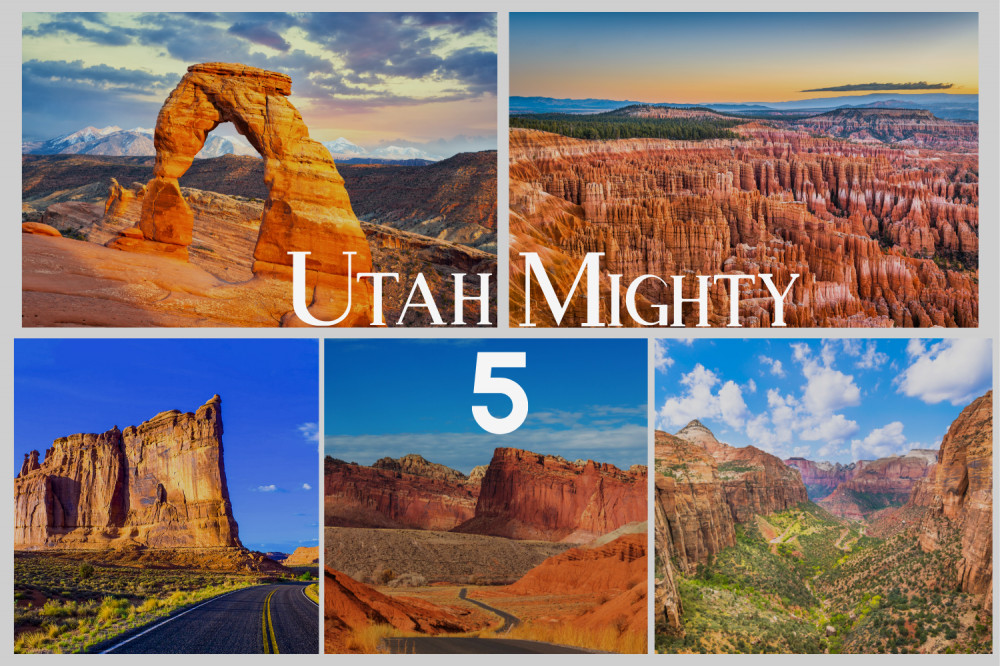
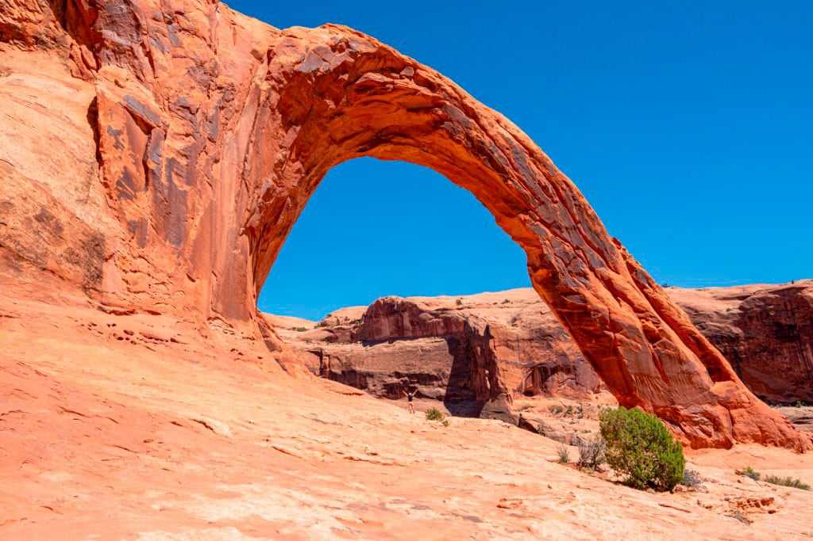
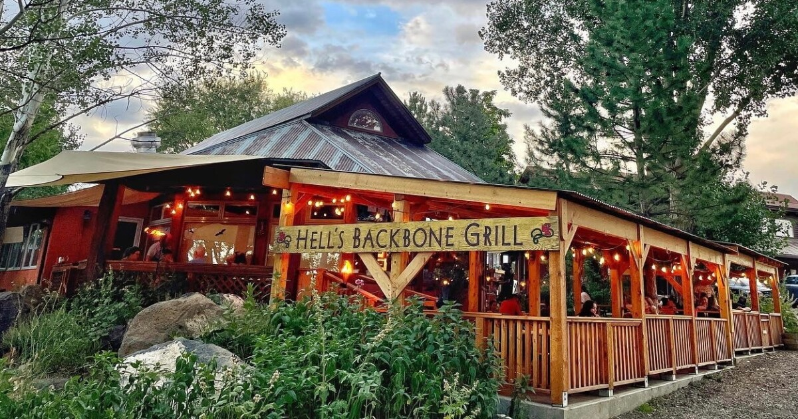

Some landmarks in Utah are the Delicate Arch, Monument Valley the vast Bonneville Salt Flats, and the historic Temple Square in Salt Lake City.
Some restaurants of Utah are Hell's Backbone Grill, Log Haven, and Dairy Keen.
Some National Parks in Utah are Zion, Bryce Canyon, Arches, Capitol Reef, and Canyonlands.



